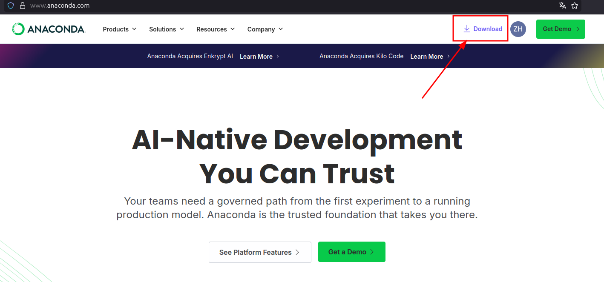
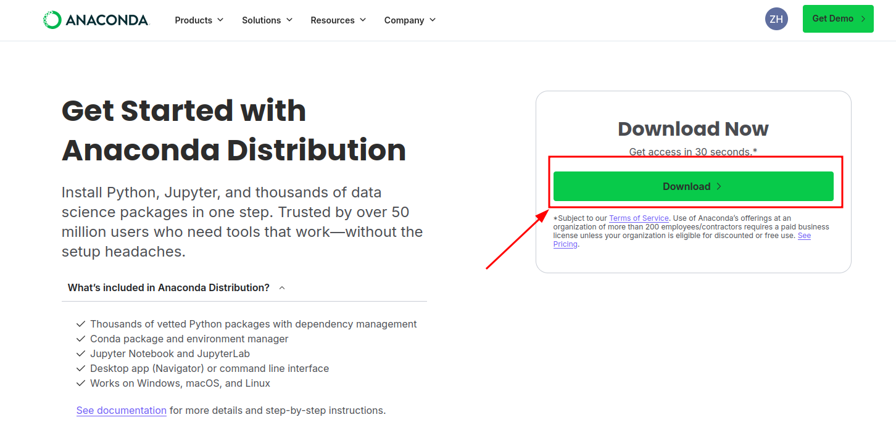

1.2 System and Environment¶
Supported Platforms¶
| Scenario | Architecture | Controller and libraries |
|---|---|---|
| Development/simulation machine | x86_64 | bin/, lib/ |
| Y20W RK3588 | aarch64/arm64 | bin_rk3588/, lib_rk3588/ |
Use Ubuntu with a graphical desktop for MuJoCo and log viewers when possible. On headless systems, use the simulation --headless option.
Automatic Installation¶
Run from the project root:
bash scripts/setup_conda_env.sh
conda activate quad_controller
The script prepares Python 3.8, MuJoCo, NumPy, PyYAML, ONNX Runtime, and Python LCM. The system also needs liblcm-dev and common build tools.
Manual Checks¶
python3 -c "import mujoco, numpy, yaml, onnxruntime; print('Python dependencies OK')"
python3 -c "import lcm; print('Python LCM OK')"
lcm-gen --version
To repair only Python LCM inside the Conda environment, run:
bash scripts/install_python_lcm.sh
Install Conda¶
If Conda is unavailable, download the Linux installer from Anaconda or Miniconda. Use the ARM64 installer on RK3588 and the x86 installer on x86_64 development machines.



Environment Acceptance¶
| Check | Success indicator | If it fails |
|---|---|---|
conda activate quad_controller |
Prompt shows the target environment | Rerun the install script and confirm Conda initialization |
| Python dependency imports | Prints Python dependencies OK |
Confirm the current python3 comes from the target environment |
import lcm |
Prints Python LCM OK |
Run install_python_lcm.sh |
lcm-gen --version |
Returns version information | Install the system LCM development package |
| MuJoCo graphics environment | Can create a window | Check GPU driver, DISPLAY, and remote desktop setup |
A headless server can run headless simulation and LCM tools, but cannot use MuJoCo Viewer, the hardware Viewer, or interactive plotting windows.
Common Environment Conflicts¶
pipandpython3come from different environments: install withpython3 -m pip.- System LCM does not match Conda Python: first check
which python3and the actual import location. - Remote SSH has no DISPLAY: use
--headlessor configure graphical forwarding. - x86 installers are used on RK3588 by mistake: choose ARM64 Conda and the matching library directory.